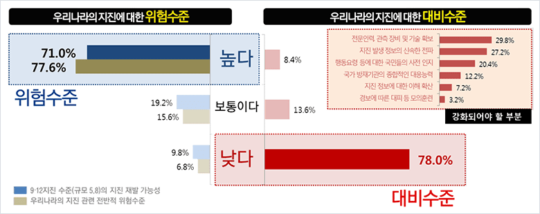
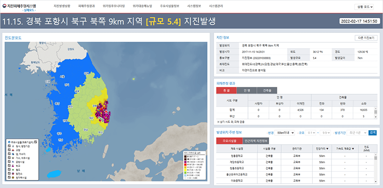

지진재해 지역안전도 평가 목적
- 지역별로 상이하게 나타나는 지진취약성을 파악하여 해당 분야의 방재역량을 개선하기 위함
- 지진재해 예방 및 대비를 위한 지역 안전도를 지역 거주민, 관련 공무원 등 대국민을 대상으로 공개하여 각 지자체의 재해 대응력을 높이고 협력하기 위함
 [그림 1] 지진에 대한 위험수준 및 대비수준 설문 결과(프라임경제, 2017) - 지역 특성에 따라 지진재해 취약지역이 다르므로 지역별 위험요소 파악을 통해 지진재해 지역안전도를 구축하는 것이 필요
- 지역 특성이 반영된 건축물 피해위험도, 대피안전도/복구역량도, 지진화재위험도, 활동곤란도/구조난이도 등을 종합 분석한 지역안전도 분석을 통한 지진방재대책을 수립하기 위함
 [그림 2] 행정안전부 지진재해대응시스템(행정안전부, 2019)